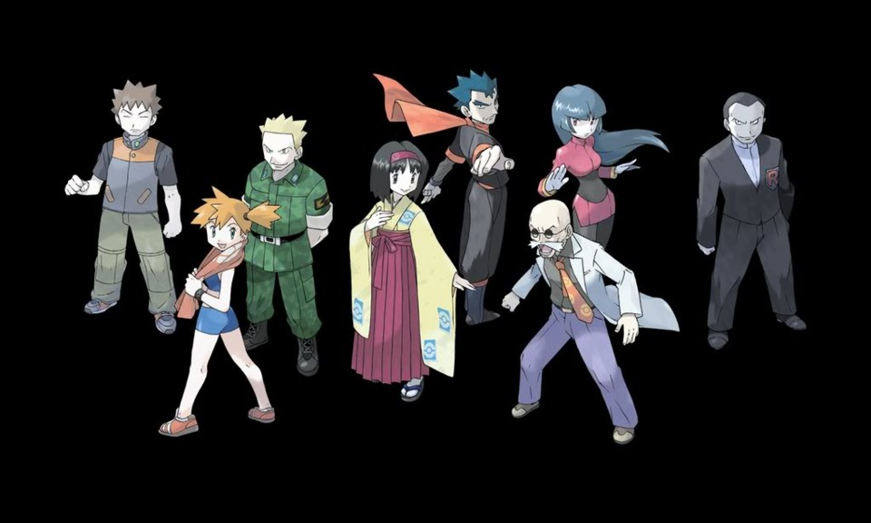
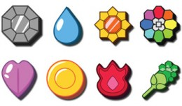
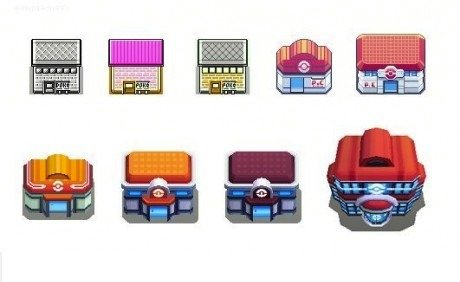
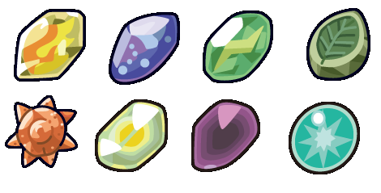
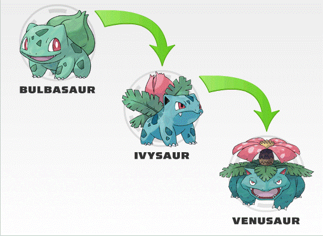

Un entraineur expérimenté. Il se spécialise dans un type de Pokémon. Il possède son propose Gym. Lorsqu'un dresseur le bat dans un combat, il lui
offre un badge .
Badge

C'est le symbole de victoire qu'un entraineur reçoit d'un Gym Leader. Il en faut 8 pour participer au tournois final d'une région.
Pokecenter

C'est l'endroit où on soigne les Pokémon... gratuitement!
Les pierres d'évolution

Ce sont les objets que l'on doit utiliser sur certains Pokémon pour forcer leur évolution . Ces pokémon ne peuvent pas évoluer
par niveau.
Évolution

Lorsqu'un Pokémon évolue, il se transforme litérallement en un autre Pokémon. L'évolution, parfois, ajoute un type à un Pokémon. Le plus commun est lorsqu'un Pokémon obtient des
ailes en évoluant : il garde son ancien type et reçoit le type "Vol" en plus.